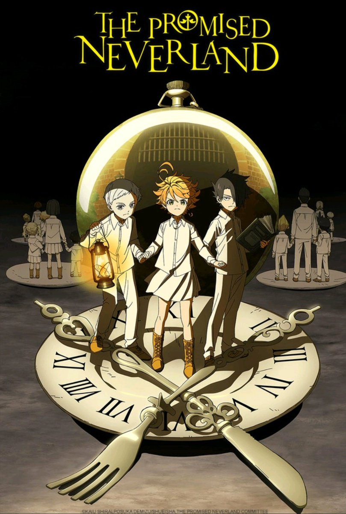

<ion-header>
  <ion-toolbar class="backMenu">
    <ion-buttons slot="start" class="branco">
      <ion-menu-button>
        <ion-icon ios="ios-more" md="md-more"></ion-icon>
      </ion-menu-button>
    </ion-buttons>
    <ion-title class="titulo" (click)="navegar('home')">
      WANIPON
    </ion-title>
  </ion-toolbar>
</ion-header>
<ion-content class="bg">
<a class="titpag">Gerador de Animes</a><br/>
<a class="filtro">Filtro</a><br/>
<div class="alinharfiltros"><a class="tagfil">2019</a><a class="tagfil">Sci-Fi</a><a class="tagfil">Psicológico</a></div><br/>
<a class="sortbut">SORTEAR ANIME</a><br/>
<div class="cardanime" (click)="navegar('animeinfo')"><a class="nomeani">The Promised Neverland</a></div>